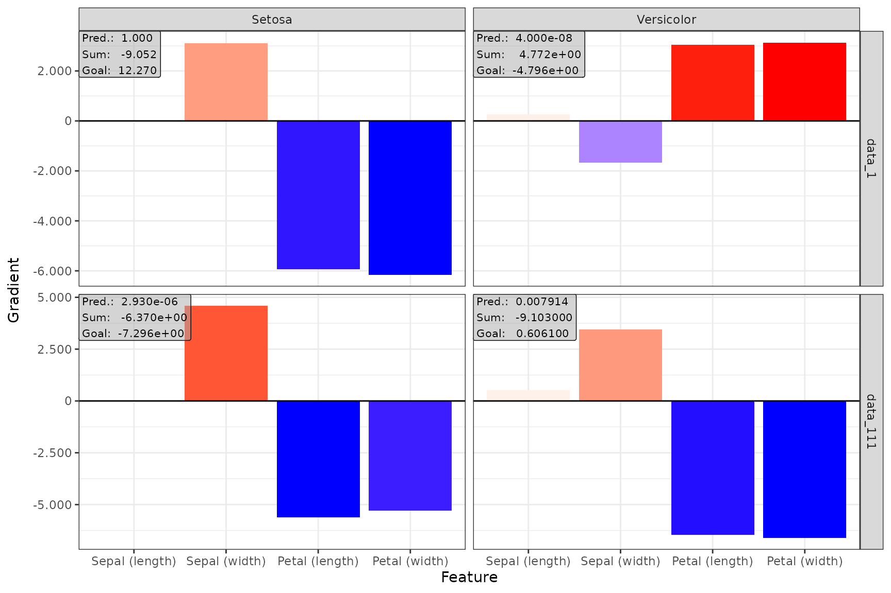
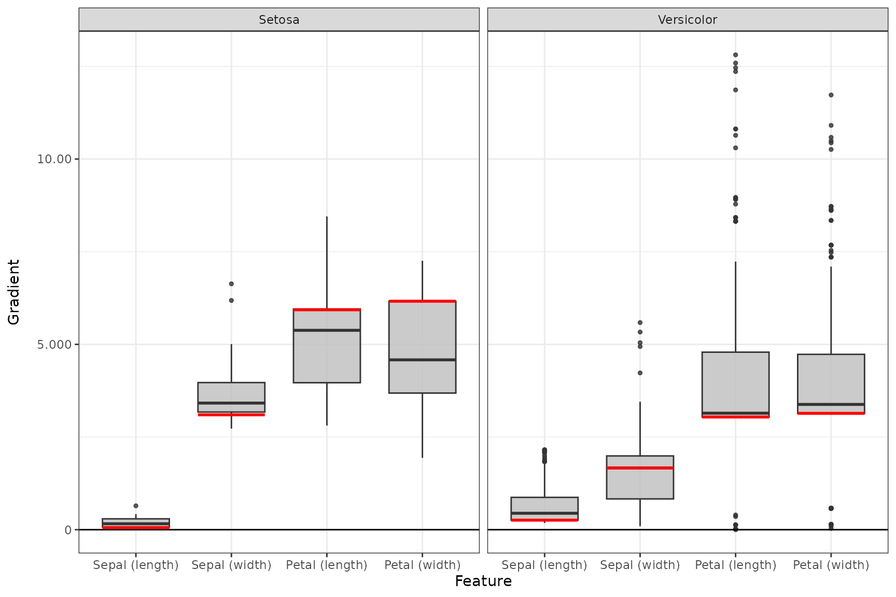

📝 Note
Since the innsight package relies on the torch package for each method and requires a successful installation of LibTorch and other dependencies (torch::install_torch()), no examples can be run in the R vignette for memory reasons. For the executed code chunks we refer to our website.
In this very elementary example, we want to show you the use of the innsight package and its possibilities in the simplest case. For this, we use the Iris dataset, which contains the length and width of the sepals and petals of the three flower species Iris Setosa, Versicolor and Virginica. In total, there are measurements of flowers of each type in centimeters.
The first step does not necessarily need the innsight package yet, but at this point, it is listed anyway to have a fully working example. In this example, the model is created and trained in torch.
📝 Note
It is also possible to train the torch model using the luz package, which is described in the vignette with the penguin dataset (see?vignette("Example_2_penguin", package='innsight')).
library(innsight)
library(torch)
# Set seeds for reproducibility
set.seed(42)
torch_manual_seed(42)
# Prepare data
data(iris)
x <- torch_tensor(as.matrix(iris[, -5]))
# normalize input to [-1, 1]
x <- 2 * (x - x$min(1)[[1]]) / (x$max(1)[[1]] - x$min(1)[[1]]) - 1
y <- torch_tensor(as.integer(iris[, 5]))
# Define model (`torch::nn_sequential`)
model <- nn_sequential(
nn_linear(4, 30),
nn_relu(),
nn_dropout(0.3),
nn_linear(30, 10),
nn_relu(),
nn_linear(10, 3),
nn_softmax(dim = 2)
)
# Train model
optimizer <- optim_adam(model$parameters, lr = 0.001)
for (t in 1:2500) {
y_pred <- torch_log(model(x))
loss <- nnf_nll_loss(y_pred, y)
if (t %% 250 == 0) {
cat("Loss: ", as.numeric(loss), "\n")
}
optimizer$zero_grad()
loss$backward()
optimizer$step()
}
#> Loss: 0.1766561
#> Loss: 0.1107753
#> Loss: 0.07782239
#> Loss: 0.07115832
#> Loss: 0.03954652
#> Loss: 0.05265981
#> Loss: 0.04911145
#> Loss: 0.04607913
#> Loss: 0.04166407
#> Loss: 0.03894886The easiest way to convert a model for the innsight
package is just using the model for the Converter class
without any further arguments (except for torch models,
the input dimension is still needed). Thus, the converting part for our
trained model is done by:
# Create the converter object
converter <- convert(model, input_dim = c(4))
#> Skipping nn_dropout ...Since there are no labels for the inputs and outputs stored in the torch model, they were generated automatically by innsight. But you can pass them by yourself using the corresponding arguments. These labels are then also used in the visualizations in step 3. Internally, the dimensions of the input and output labels are also added as checks and errors are thrown if any discrepancies arise.
# Create `Converter` object (with custom labels)
converter <- convert(model,
input_dim = c(4),
input_names = c("Sepal (length)", "Sepal (width)", "Petal (length)", "Petal (width)"),
output_names = c("Setosa", "Versicolor", "Virginica")
)
#> Skipping nn_dropout ...In addition, the default print() function for R6 classes
has been overwritten so that all important properties and contents of
the converter object can be displayed in a summarized form:
converter
#>
#> ── Converter (innsight) ────────────────────────────────────────────────────────
#> Fields:
#> • input_dim: (*, 4)
#> • output_dim: (*, 3)
#> • input_names:
#> ─ Feature (4): Sepal (length), Sepal (width), Petal (length), Petal
#> (width)
#> • output_names:
#> ─ Output node/Class (3): Setosa, Versicolor, Virginica
#> • model_as_list: not included
#> • model (class ConvertedModel):
#> 1. Dense_Layer: input_dim: (*, 4), output_dim: (*, 30)
#> 2. Skipping_Layer: input_dim: (*, 30), output_dim: (*, 30)
#> 3. Dense_Layer: input_dim: (*, 30), output_dim: (*, 10)
#> 4. Dense_Layer: input_dim: (*, 10), output_dim: (*, 3)
#>
#> ────────────────────────────────────────────────────────────────────────────────Now we can apply the implemented methods to our trained model.
Although these methods are different, they are called the same way in
innsight. Essential arguments are the converter object
(converter) and the data (data) to which the
method is to be applied. In addition to the necessary and
method-specific arguments, the following other arguments can be set for
each (local) method:
channels_first: There are, basically, two data
formats for image and signal data, having the channels at the last
position or directly after the batch axis. To be able to handle both
formats, the format of the passed data can be specified with this
argument. In this example, it is unused because we have tabular
data.
output_idx: These indices specify the output nodes
(or classes) for which the method is to be applied. By default, the
result for the first ten classes is calculated for efficiency reasons.
However, if you want to examine several specific classes simultaneously,
you must specify the corresponding indices with this argument.
ignore_last_act: Often it makes more sense to ignore
the last activation function to get better results. This is especially
true for classification problems with softmax or sigmoid as the last
activation.
For all possible and more detailed information on the arguments, see the detailed explanation. In the following, we apply our trained model to different methods provided in the package:
Gradient without last activation
grad_no_softmax <- run_grad(converter, x, ignore_last_act = TRUE)Gradient with last activation
grad_softmax <- run_grad(converter, x, ignore_last_act = FALSE)LRP with -rule ()
We can also set the method-specific arguments, such as the LRP rule and its associated parameter:
lrp_eps <- run_lrp(converter, x, rule_name = "epsilon", rule_param = 0.01)DeepLift with mean as reference value
x_ref <- x$mean(1, keepdim = TRUE) # ref value needs the shape (1,4)
deeplift_mean <- run_deeplift(converter, x, x_ref = x_ref)Similar to the instances of the Converter class, the
default print() function for R6 classes was also overridden
for each method so that all important contents of the corresponding
method are displayed:
deeplift_mean
#>
#> ── Method DeepLift (innsight) ──────────────────────────────────────────────────
#> Fields (method-specific):
#> • rule_name: 'rescale'
#> • winner_takes_all: TRUE
#> • x_ref: mean: -0.102613838389516 (q1: -0.124814866110682, q3:
#> -0.0791879296302795)
#> Fields (other):
#> • output_idx: 1, 2, 3 (→ corresponding labels: 'Setosa', 'Versicolor',
#> 'Virginica')
#> • ignore_last_act: TRUE
#> • channels_first: TRUE
#> • dtype: 'float'
#>
#> ── Result (result) ──
#>
#> ─ Shape: (150, 4, 3)
#> ─ Range: min: -6.73285, median: -0.0669591, max: 10.5614
#> ─ Number of NaN values: 0
#>
#> ────────────────────────────────────────────────────────────────────────────────Afterward, the results can be retrieved either with the class method
method$get_result() or the equivalent S3 function
get_result(). With the argument type, it is
also possible to select whether the results are returned as
array, data.frame or
torch_tensor:
# Get result as a `data.frame` using the class method
head(grad_no_softmax$get_result(type = "data.frame"), 5)
#> data model_input model_output feature output_node value pred
#> 1 data_1 Input_1 Output_1 Sepal (length) Setosa -0.05389007 1.0000000
#> 2 data_2 Input_1 Output_1 Sepal (length) Setosa -0.14527106 0.9999998
#> 3 data_3 Input_1 Output_1 Sepal (length) Setosa -0.05389007 0.9999999
#> 4 data_4 Input_1 Output_1 Sepal (length) Setosa -0.14527106 0.9999998
#> 5 data_5 Input_1 Output_1 Sepal (length) Setosa -0.05389007 1.0000000
#> decomp_sum decomp_goal input_dimension
#> 1 -9.052043 12.27147 1
#> 2 -9.081505 10.95905 1
#> 3 -9.052043 11.70972 1
#> 4 -9.081505 11.04962 1
#> 5 -9.052043 12.53276 1
# Get result as `array` (default) using the generic S3 function
str(get_result(grad_no_softmax))
#> num [1:150, 1:4, 1:3] -0.0539 -0.1453 -0.0539 -0.1453 -0.0539 ...
#> - attr(*, "dimnames")=List of 3
#> ..$ : NULL
#> ..$ : chr [1:4] "Sepal (length)" "Sepal (width)" "Petal (length)" "Petal (width)"
#> ..$ : chr [1:3] "Setosa" "Versicolor" "Virginica"The package innsight provides two ways to visualize
the results of a method, namely as innsight_ggplot2 or
innsight_plotly object. Both are S4 classes to combine
multiple plots nicely and to be able to make visual modifications or
adjustments to the selection of plots even after the object has been
created. The first class is based on ggplot2 and
behaves partly like an ordinary ggplot2 object. Whereas
the other one is based on the plotly package and
creates an interactive graph with more detailed information about each
variable. For more information on the S4 classes
innsight_ggplot and innsight_plotly see the in-depth
vignette or the respective R documentation
(?innsight_ggplot2 or ?innsight_plotly).
For each of these classes and thus, of course, also for each method, there are two plot functions:
plot() shows only individual data points andplot_global() visualizes summaries of multiple data
points using summary statistics (you can also use the alias
boxplot() for tabular and signal data).The function plot() is implemented for each of the
available methods. You can select your desired data points and output
nodes/classes with the data_idx and output_idx
arguments, respectively. To switch between a ggplot2
and plotly based plot, you can use the logical
as_plotly parameter, but this requires a successful
installation of the plotly package.
📝 Note
Of course, only results of output nodes/classes to which the method has been applied can be plotted, i.e., the indices in theoutput_idxargument must be a subset of the argument with the same name when calling the method in Step 2.
Despite being an object of the class innsight_ggplot2,
it can be treated like a normal ggplot2 object, i.e.,
geoms, scales and themes can be added and modified.
# Show data point 1 and 111 for output node 1 (Setosa) and 2 (Versicolor)
plot(grad_no_softmax, data_idx = c(1, 111), output_idx = c(1, 2)) +
ggplot2::theme_bw()
The S3 function plot_global() (or boxplot()
for tabular and signal data) is implemented for each of the available
local methods. You can select your desired data points (default is
'all') and output nodes/classes with the
data_idx and output_idx arguments,
respectively. To switch between a ggplot2 and
plotly based plot, you can use the logical
as_plotly parameter, but this requires a successful
installation of the plotly package. In addition, you
can use ref_data_idx to select a single data point that
will be visualized in red as a reference value, and
preprocess_FUN to select a function that will be applied to
all relevances in advance (e.g., the absolute value).
📝 Note
Of course, only results of output nodes/classes to which the method has been applied can be plotted, i.e., the indices in theoutput_idxargument must be subset of the argument with the same name when calling the method in Step 2.
Despite being an object of the class innsight_ggplot2,
it can be treated like a normal ggplot2 object,
i.e. geoms, scales and themes can be added and modified.
# Summarized results for output node 1 (Setosa) and 2 (Versicolor) and
# reference value of index 3
boxplot(grad_no_softmax, output_idx = c(1, 2), ref_data_idx = 3, preprocess_FUN = abs) +
ggplot2::theme_bw()